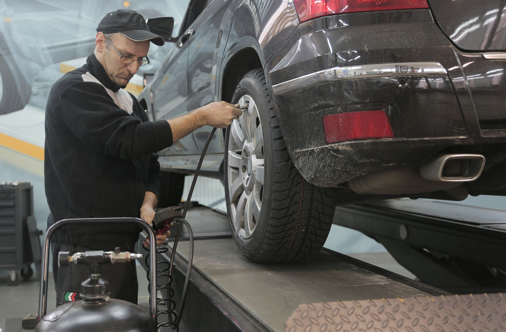

Alinhamento ajusta os ângulos das rodas para que fiquem retas em relação ao chão e entre si. Balanceamento corrige o peso das rodas e dos pneus, distribuindo a massa de forma uniforme para acabar com a vibração em velocidade alta. Um cuida da direção do carro. O outro cuida da suavidade da rodagem.
O que é alinhamento de rodas?
O alinhamento corrige os ângulos das rodas em relação à suspensão e ao solo. Existem três medidas principais nesse ajuste: cambagem, convergência e cáster. Quando alguma delas sai do padrão de fábrica, o carro puxa para um lado sozinho, o volante fica torto mesmo com as rodas alinhadas, ou o pneu desgasta de um jeito estranho.
O processo é feito com um equipamento a laser conectado às quatro rodas. O técnico mede os ângulos atuais e compara com as especificações do fabricante do carro. Depois disso, ele ajusta as peças da suspensão até que cada medida volte ao valor correto.
Sem alinhamento, o carro não anda em linha reta sozinho. Você segura o volante o tempo todo para compensar o desvio, mesmo em uma reta plana. Com o tempo isso desgasta o pneu de um lado só, cansa o motorista em viagens longas e ainda força peças da suspensão que não deveriam sofrer esse esforço extra.
O que é balanceamento de rodas?
O balanceamento corrige o peso da roda já montada com o pneu. Nenhuma roda sai perfeitamente equilibrada de fábrica e o desgaste do uso diário aumenta essa diferença de peso com o tempo. O resultado é uma vibração que aparece em velocidades específicas, geralmente entre 80 e 100 km/h.
Para balancear, o técnico coloca a roda em uma máquina que gira e detecta onde está o excesso de peso. Depois ele cola pequenos pesos de chumbo ou zinco na borda do aro para compensar essa diferença. O processo é rápido e costuma ser feito nas quatro rodas ao mesmo tempo.
Sem balanceamento, a vibração aparece primeiro no volante e depois se espalha para o banco e o painel. Em uso prolongado ela desgasta rolamento de roda, amortecedor e até a caixa de direção. O pneu também sofre um desgaste irregular em forma de ondas na banda de rodagem.
Os dois serviços resolvem problemas diferentes
O alinhamento entra em ação quando o carro puxa para um lado ou o volante não fica centralizado com as rodas retas. Esse tipo de problema costuma aparecer depois de bater em um buraco, subir em uma guia ou trocar uma peça da suspensão.
O balanceamento entra em ação quando existe vibração ligada à velocidade, sentida principalmente no volante. Isso costuma aparecer depois de trocar pneu, rodar muito tempo sobre asfalto ruim ou perder um peso de chumbo que caiu do aro. Quando os dois sintomas aparecem ao mesmo tempo, o carro precisa dos dois serviços na mesma visita à oficina.
Como saber qual você precisa agora
Preste atenção em como o problema se manifesta ao dirigir. Se o carro puxa para a direita ou para a esquerda quando você solta o volante em uma reta, o caso é alinhamento. Se o volante balança dentro de uma faixa de velocidade específica e some quando você acelera ou desacelera, o caso é balanceamento.
Olhar o desgaste do pneu também ajuda no diagnóstico. Desgaste maior em uma borda só do pneu indica alinhamento fora do padrão. Desgaste em ondas ao redor de toda a banda de rodagem indica balanceamento pendente. Na dúvida, o melhor caminho é levar o carro para uma avaliação presencial, porque os dois problemas às vezes se confundem para quem não trabalha com isso todo dia.
Por que costumam ser feitos juntos?
Alinhamento e balanceamento usam parte do mesmo processo de verificação e o carro já precisa subir no elevador para os dois serviços. Fazer as duas coisas na mesma visita economiza tempo e evita duas idas separadas até a oficina.
Também existe um motivo prático por trás disso. Os dois problemas costumam nascer das mesmas causas, como buraco na rua ou troca recente de pneu. Resolver os dois juntos garante que o carro saia da oficina andando reto e sem vibração, em vez de corrigir só metade da história.
FAQ
Posso fazer só um dos serviços?
Pode, sim, se o sintoma apontar claramente para apenas um dos dois problemas. Mas como buraco na rua e troca de pneu costumam afetar alinhamento e balanceamento ao mesmo tempo, fazer os dois juntos evita que você volte à oficina daqui a poucas semanas.
Com que frequência fazer alinhamento e balanceamento?
A recomendação é a cada 10.000 km rodados ou sempre que você trocar os pneus. Vale também fazer uma checagem depois de bater em um buraco grande ou subir em uma guia com mais força que o normal.
Alinhamento errado estraga o pneu?
Estraga. Um alinhamento fora do padrão de fábrica faz o pneu desgastar de forma irregular e reduz sua vida útil. Em casos mais graves esse desgaste desigual chega a comprometer a aderência do carro, principalmente em piso molhado.
Na Maynard Auto Center, alinhamento e balanceamento são feitos com equipamento a laser e checagem completa nas quatro rodas. A oficina fica na Av. Antônio Carlos Magalhães, nº 3410, no bairro Iguatemi, em Salvador, Bahia. O atendimento cobre clientes de ACM, Itaigara, Pituba, Caminho das Árvores, Horto Florestal, Stiep, Boca do Rio, Imbuí e Tancredo Neves.
Se o seu carro está puxando para um lado ou vibrando na estrada, chama no WhatsApp (71) 99626-6142 e agende uma avaliação.